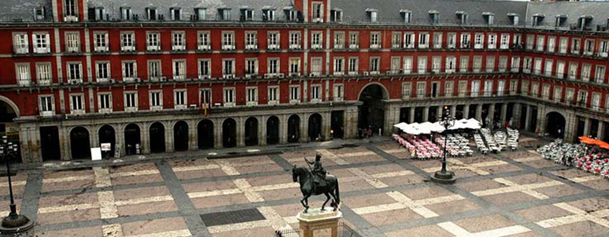

MADRID
-Población-
La población de Madrid ha ido experimentando un importante aumento desde que se transformó en capital. Este aumento es especialmente significativo durante el siglo XX , debido a la gran cantidad de inmigración, tanto interior como exterior.
-Climatología-
El clima de Madrid es mediterráneo continentalizado y está muy influido por las condiciones urbanas. Los inviernos son frescos, con temperaturas inferiores a los 8º, heladas nocturnas y nevadas ocasionales. Los veranos calurosos con medias superiores a los 24º en julio y agosto con máximas que muchas veces superan los 35º.
La oscilación diaria es importante en la periferia urbana, pero se ve reducida en el centro de la ciudad por el efecto antrópico. Las precipitaciones, aunque escasas, están regularmente distribuidas a lo largo del año si exceptuamos los meses de verano.
Además de por sus lugares de interés histórico, toda la ciudad ofrece infinidad de posibilidades comerciales.
